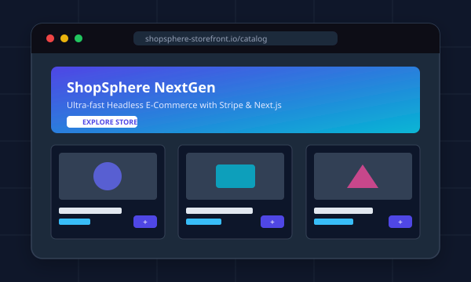
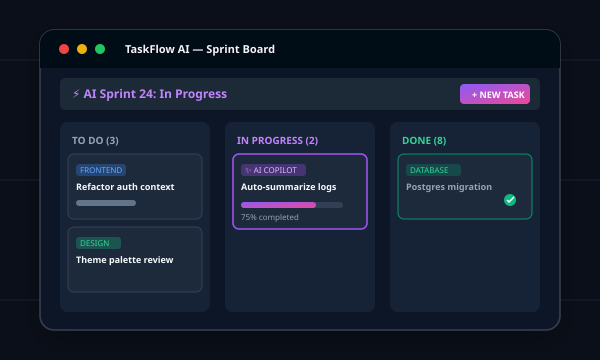

Full Stack
I turn ideas into useful digital experiences
Hello, world! I am
Sonali Gautam
I love turning ideas into digital experiences that are not only functional but also intuitive and engaging. From developing applications to exploring new technologies, I’m constantly learning, experimenting, and finding creative ways to solve real-world problems through code.
About Me
Building Today. Learning Every Day. Creating for Tomorrow.
Passionate about building meaningful solutions, exploring new technologies, and continuously improving my skills.
Sonali Gautam
Aspiring Software Engineer | Data Analytics Enthusiast
Education
B.Tech - Information Science and Engineering
Year
4th Year • 7th Semester
Interests
Software Development • Data Analytics • Problem Solving
Focus
Web Development • Data Analysis Building Real-World Projects
Status
Open to Internships & Job Opportunities
Turning Ideas into Real-World Solutions
I’m a technology enthusiast and aspiring software developer with a strong interest in building practical solutions to real-world problems. My journey in technology has involved exploring web development, programming, and data analytics through hands-on projects and continuous learning.
I enjoy turning ideas into functional, user-focused solutions while strengthening my skills in problem-solving, development, and data-driven thinking. I’m always eager to learn new technologies, take on challenging projects, and collaborate with others. I’m currently looking for opportunities where I can contribute my skills, gain real-world experience, and grow as a software professional.
I believe that every project is an opportunity to learn, improve, and create something valuable. I’m adaptable, curious, and committed to continuously developing both my technical and professional skills while contributing positively to the teams and projects I work with.
Academic Journey
Education & Learning
Every stage of my education has helped shape the way I learn, think, and solve problems.
Bachelor of Technology in Information Science & Engineering
2023 – 2027
JAIN (Deemed-to-be) University • Bengaluru, Karnataka, India
Developing strong technical and problem-solving skills through academic learning, hands-on projects, and continuous exploration of emerging technologies. (GPA: 8.3 / 10)
Data Structures & Algorithms
Database Management System
Computer Networks
Software Engineering
Web Development
Operating Systems
Class XII (Higher Secondary Education)
2021 – 2023
Sri Chaitanya Techno School • Bengaluru, Karnataka, India
Completed my higher secondary education with a focus on building a strong academic foundation and preparing for further studies in technology and engineering.
Physics
Chemistry
Mathematics
Information Practices
Class X (Secondary Education)
2021
SJR Kengeri Public School • Bengaluru, Karnataka, India
Completed my secondary education, building a strong academic foundation while developing curiosity, discipline, and a passion for learning.
Academic Foundation
Logical Thinking
Problem Solving
Discipline
Competencies
Skills & Technologies
The technical skills, tools, and technologies I use to build projects, solve problems, and create practical digital solutions.
Programming Languages
Python
General purpose programming
Java
Object-oriented programming
SQL
Database queries
AI / ML Technologies
Python for ML
Machine learning development
NumPy
Numerical computing
Pandas
Data manipulation
Scikit-learn
Machine learning
Matplotlib
Data visualization
Web Technologies
HTML5
Structure and content
CSS3
Styling & responsive design
JavaScript
Interactive web applications
React.js
Frontend development
REST APIs
Web service integration
Databases
MySQL
Relational database
MongoDB
NoSQL database
PostgreSQL
Relational database
Database Design
Schema and data modeling
Cassandra
Distributed NoSQL database
Tools & Cloud
Git
Version control
GitHub
Code collaboration
Docker
Containerization
Netlify
Website Deployment
Postman
API testing
Development Environments
VS Code
Primary code editor
IntelliJ IDEA
Java development
Google Colab
Cloud-based development
Jupyter Notebook
Data analysis
PyCharm
Python development
Portfolio
Featured Projects
A showcase of production-ready applications, open-source repositories, and system prototypes.

Frontend & UI Full Stack
Full Stack
 Backend & DevOps
Backend & DevOps
Curriculum Vitae
Looking for a detailed breakdown?
Download my complete, up-to-date resume in standardized PDF format. Includes comprehensive breakdown of technical skills, employment history, engineering accomplishments, and education.
Get In Touch
Let's Connect & Build Something Meaningful
Whether you’re looking to collaborate on a project, discuss a job or internship opportunity, or simply connect, I’d love to hear from you.
Email Address
Phone Number
Location
Bengaluru, Karnataka, India
Send a Direct Message
Fill out this quick form and I will get back to you within 24 hours.
Ask Sonali
● Online • Portfolio AI
Suggested questions: